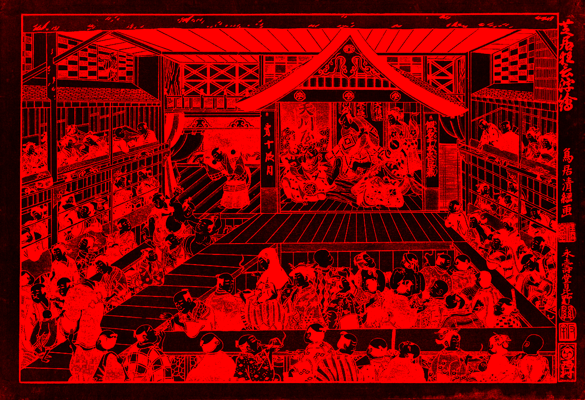

-
1603-1868
EDO PERIOD
An unprecedented flourishing of culture and art in Japan. Ghost stories and stories about monsters and strange phenomena from the all over Japan experienced a huge surge in popularity. The very first mythical bestiaries were put together by folklorists and artists like Toriyama Sekien, who collected the oral traditions of rural Japan for consumption by the growing urban population (and added a few original monsters into the mix). Sekien’s yōkai encyclopedias set the stage for other artists, and a new tradition was born. It quickly expanded into every aspect of Japanese culture, from fine art to high theater, from aristocratic ghost story-telling parties to low class bawdlery.
 -
1712-1788
TORIYAMA SEKIEN
One of the most popular folklorists of this time who also kept a collection of Yōkai stories as he traveled throughout Japan. Seiken's collection was special in that it cataloged each Yōkai with an image and story that he created or originated from traditional Japanese folklore and Chinese literature. Seiken is credited with drawing over 200 Yōkai and creating a method of compiling Yōkai as a physical art form to be shared verbally.
-
1868-1912
MEIJI PERIOD
The most turbulent times for Japanese folklore in that Yōkai storytelling was almost completely eradicated. As Japan was westernized and swept into a wave of modernization. A cultural shift away from its historical benevolence for the supernatural and instead Japan pursued scientific and rationalist logic. There was an academic effort led by Inoue Enryō to scientifically address each known story of the Yōkai and dispel its significance with science and logic. Ironically enough, Inoue created one of the largest collections of Yōkai descriptions and narratives from all over the country. As the government of Japan grew and became more militarized, the traditional Yōkai beliefs were seen as superstitious and troublesome. By WWII, Yōkai was almost lost within Japanese culture with remnants of the storytelling only among more remote populations.

-
20th Century
PRESENT DAY
Cultural attitudes changed around Yōkai once again. Instead of viewing Yōkai as a meaningless superstition, academics such as Yanagita Kunio (1875-1962) began to study Yōkai as Japanese folklore. He began to collect stories, art, and narratives of Yōkai as a means to better understand the lives of Japanese people in different regional areas. He recognized that Yōkai provide a portal into the soul of local Japanese cultures. Through the study of Yōkai, Kunio could learn the values, fears, and varying depths of imagination of Japan's various regions and their cultures. As Yōkai became popular in the academic setting, it soon became popular in the entertainment setting as well. Manga artists like Mizuki Shigeru (1922-2015) created popular series that heavily incorporated Yōkai narratives into his work. As the popularity of Yōkai has spread, the monsters of Yōkai can now be seen in manga, anime, filmed works, as well as video games.